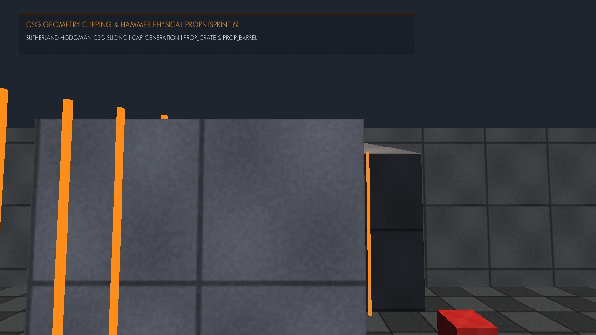
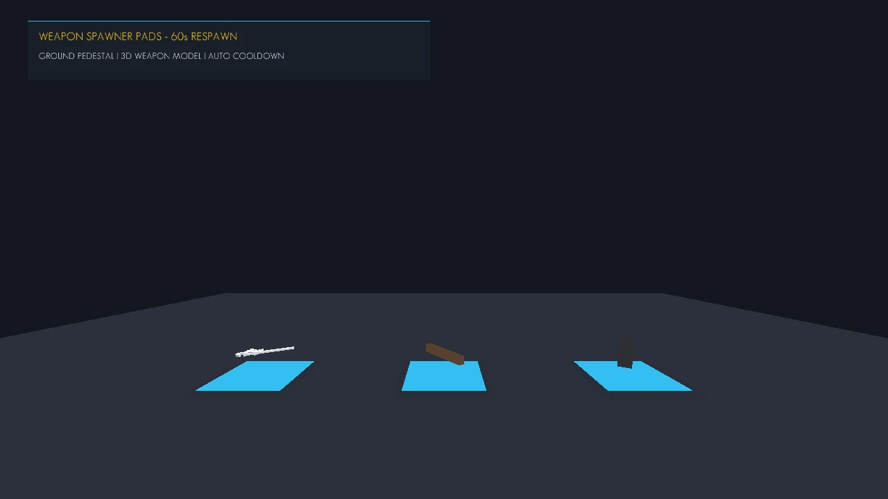
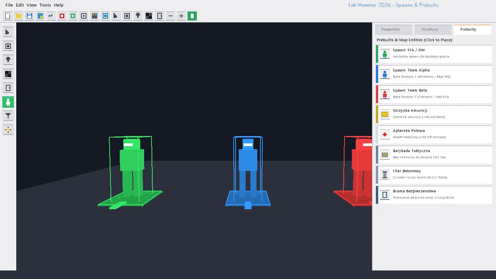

")


LabHammer
.labmap format.
LabHammer.exe links directly against the static LabEngineLib library. It utilizes the exact same OpenGL 4.5+ DSA shaders, material texture loaders, and spatial AABB mathematics as the game runtime Lab.exe. What you design in the editor renders with pixel-identical results in the game.
1. Overview & Architecture
LabHammer is the dedicated, standalone 3D level authoring application designed specifically for the Lab Engine and Frozen-Life. Compiled as LabHammer.exe from src/editor_main.cpp, it provides a comprehensive real-time desktop CAD environment for designing, texturing, populating, and compiling level environments.
Unlike external DCC packages (e.g. Blender, Maya), LabHammer generates native, optimized spatial primitives and entities that are consumed directly by the engine's physics and rendering systems without intermediary conversion or baking pipelines.
3. The 7 Core Editing Tools
The editor toolbar grants immediate access to 7 specialized editing modalities:
Tool 0: Selection Pointer
TOOL 0Raycast picker utilizing the camera's view frustum. Selects any Brush, Prop, Door, Spawn, or Weapon Pickup in 3D space. Highlights selection with a glowing wireframe bounding box and opens its parameters in the properties panel.
Tool 1: Block / Brush Tool
TOOL 1Creates volumetric solid 3D cubes/brushes. Automatically snaps placement to the active grid increment. Applies active texture and UV scale coordinates. Allows direct keyboard/mouse resizing on all 3 axes.
Tool 2: 3D Prop Tool
TOOL 2
Places static and interactive 3D .stl meshes (e.g., machinery, structural monoliths). Supports independent 3-axis rotation (Pitch, Yaw, Roll) and non-uniform scaling vectors.
Tool 3: Texture Pipette
TOOL 3Two-in-one material management tool: Left-Click paints the active texture and UV scale onto any clicked brush surface; Right-Click acts as an eyedropper pipette to sample texture and UV scaling directly from geometry.
Tool 4: Dynamic Door Tool
TOOL 4
Creates animated bunker airlock doors (bunker_airlock). Configures open displacement vector (dx, dy, dz), opening speed (m/s), and automatic proximity trigger radius.
Tool 5: Entity Spawn Tool
TOOL 5
Places player spawn entities with team affiliation flags: neutral Deathmatch (info_player_deathmatch), Team Alpha Blue HQ (info_player_team1), and Team Beta Red HQ (info_player_team2).
Tool 6: CSG Clip Tool
TOOL 6Full 3D Constructive Solid Geometry (CSG) clipping and polygon slicing tool based on high-precision CSG Plane Clipping. Utilizes Sutherland-Hodgman polygon clipping and cross-section cap generation to slice solid brushes into watertight convex polyhedra.
Press X or Shift+X to cycle clipping modes:
Keep Front (retains positive half-space), Keep Back (retains negative half-space), or Keep Both (splits brush into two convex brushes). Press Enter to commit the clip. Preserves planar texture UV mappings and normals.
Tool 7: Lamp / Light Tool
TOOL 7Places dynamic omni point lamps directly into the 3D scene. Real-time forward lighting recalculation in the viewport previews quadratic falloff, specular highlights, and radius cutoff.
Features 3D glowing bulb visualization, fixture cap, wireframe bounding sphere, interactive +Y elevation gizmo arrow, and 6 one-click Kelvin/Atmospheric color presets (Warm 2700K, Cool 6500K, Sodium Amber, Neon Cyan, Hazard Red, Toxic Green). Full documentation: Dynamic Lighting & Lamps.
4. Entity Properties Inspector Panel
When an object is selected in the 3D viewport, the right-hand inspector panel displays and allows live editing of its parameters:
| Entity Type | Configurable Parameters in LabHammer | Real-Time Impact |
|---|---|---|
| MapBrush (Geometry) | Position (X, Y, Z), Dimensions (W, H, D), Texture path, UV Scale (U, V) (1.0x, 0.5x, 0.25x), Color tint, UV Mapping Mode (Planar/Box) |
Directly mutates GPU vertex buffer coordinates; updates collision AABB bounding box immediately. |
| MapProp (3D Model) | 3D Model path (.stl), Position, Rotation angles (Pitch, Yaw, Roll), Scale (Sx, Sy, Sz), Color tint |
Evaluates model matrix TRS; loads STL topology into GPU memory via Mesh::loadSTL. |
| MapDoor (Airlock) | Door name, Position, Size, Open Offset Vector (dx, dy, dz), Open Speed (m/s), Proximity Trigger Radius |
Defines dynamic sliding physics; triggers automatic opening when player or bot crosses radius threshold. |
| MapSpawnPoint | Entity class (info_player_*), Position, Yaw orientation angle (0°–360°), Spawn Type (FFA, TeamAlpha, TeamBeta) |
Registers spawn points in the engine session manager for round starts and respawn cycles. |
| MapWeaponSpawner | Weapon ID (Pipe to RPG), Position, Respawn cooldown timer (seconds), Initial spawned state | Spawns rotating 3D pickups with glowing ambient light and pickup sound collision volume. |
5. Asset Browsers (Textures & 3D STL Models)
- Visual Texture Browser: Clicking "Browse Textures" opens a 6-column modal thumbnail grid scanning
assets/textures/*.bmp. Shows live texture previews and allows instant one-click assignment to the active brush or tool. - 3D Model Browser: Scans
assets/models/*.stlwith an integrated "Browse Disk STL" button, allowing designers to import new custom 3D STL geometry into the level on the fly.
6. Quick Prebuilt Template Library
LabHammer features a rapid stamping library for common tactical level elements:
- Spawn [FFA / DM]: Neutral Deathmatch spawn point.
- Spawn [Team Alpha / Beta]: Base spawn locations for team modes.
- Ammunition Crate: Pre-textured military ammo crate with hazard striping.
- Field Medkit: First-aid station brush with cross insignia.
- Tactical Barricade: Waist-high concrete cover geometry (3.0 x 1.2 x 0.6 units).
7. Modern .labscene (JSON) & Legacy .labmap Migration
LabHammer authoring is built around the modern .labscene JSON format, providing a structured, hierarchical scene graph with nested entity components, camera nodes, transform trees, and PBR material bindings.
{
"version": 2,
"metadata": {
"name": "Cryo Wasteland Outpost",
"ambient": [0.15, 0.20, 0.30],
"sun_dir": [-0.6, -0.7, -0.2],
"sun_color": [0.85, 0.92, 1.0],
"fog_density": 0.008
},
"entities": [
{
"name": "player_camera_tpp",
"transform": { "pos": [0.0, 2.0, 12.0], "rot": [0.0, 180.0, 0.0], "scale": [1.0, 1.0, 1.0] },
"components": {
"camera": { "fov": 75.0, "near": 0.1, "far": 1000.0, "target": "player", "offset": [0.6, 1.8, -3.5] }
}
},
{
"name": "bunker_airlock_door",
"transform": { "pos": [0.0, 1.75, -3.0], "rot": [0.0, 0.0, 0.0], "scale": [3.0, 3.5, 0.5] },
"components": {
"door": { "slide_delta": [3.5, 0.0, 0.0], "speed": 2.0, "auto_close_delay": 4.5 },
"script": "assets/scripts/airlock_trigger.lua"
}
}
]
}.labmap file, an interactive modal dialog prompts: "Upgrade to Modern .labscene format?". Upon confirmation, the engine generates an automatic safety copy filename.labmap.backup before writing out the clean, structured .labscene.
For backwards compatibility, legacy plain-text .labmap files remain fully supported by the parser in src/LabMap.cpp:
LABMAP_VERSION 1
METADATA
name "Cryo Wasteland Outpost"
ambient 0.15 0.20 0.30
sun_dir -0.6 -0.7 -0.2
sun_color 0.85 0.92 1.0
END_METADATA
ENTITIES
// Scene Camera (Over-the-shoulder Third Person Player Camera)
camera cam_tpp 0.0 2.0 12.0 0.0 180.0 0.0 75.0 player 0.6 1.8 -3.5 0.3 1
spawn 0.0 1.8 5.0 0.0
spawn_point info_player_deathmatch 0.0 1.8 5.0 0.0 ffa
spawn_point info_player_team1 -14.0 1.8 8.0 45.0 team_alpha
spawn_point info_player_team2 14.0 1.8 -12.0 -135.0 team_beta
// Frozen terrain baseplate
brush cube 0.0 -0.5 0.0 200.0 1.0 200.0 0.9 0.95 1.0 snow_frost.bmp
// Rotated Monolith Tower (Pitch / Yaw / Roll rotation support)
brush cube -20.0 5.0 -20.0 4.0 10.0 4.0 0.55 0.50 0.58 concrete_wall.bmp
rot 0.0 45.0 0.0
script assets/scripts/tower_behavior.lua
// Cryo prop model with texture & orientation
prop Model.stl 0.0 2.5 -15.0 0.0 45.0 0.0 2.5 2.5 2.5 0.7 0.85 1.0 metal_hull.bmp
// Outpost bunker pressure airlock with dedicated script hook
door bunker_airlock 0.0 1.75 -3.0 3.0 3.5 0.5 3.5 0.0 0.0 0.2 0.3 0.4 2.0 4.5
script assets/scripts/airlock_trigger.lua
END_ENTITIES8. Keyboard & Mouse Shortcuts Cheat-Sheet
| Shortcut / Input | Function in LabHammer | Scope |
|---|---|---|
Hold RMB + Move Mouse |
Free 3D viewport camera look (Pitch & Yaw) | 3D Viewport |
Hold RMB + W / A / S / D |
Fly camera navigation (Forward, Strafe Left, Back, Strafe Right) | 3D Viewport |
Hold RMB + Space / Ctrl |
Ascend (Space) / Descend (Ctrl) in 3D space | 3D Viewport |
Hold Shift while Flying |
Sprint camera boost (increases flight speed from 15 m/s to 35 m/s) | 3D Viewport |
W / E / R / T |
Switch Transform Gizmo Mode: W Move, E Rotate, R Scale, T Universal | Gizmo Mode |
[ / ] |
Decrease Snap ( [ ) / Increase Snap ( ] ) (Grid snap: 0.125m..16m, Angle snap: 5°..90°) | Grid & Angle Snapping |
RMB Click / Shift + RMB |
Open Viewport Context Menu with Magic Add (Camera, Light, Spawn, Brush, Broom, Door) | 3D Viewport |
LMB Drag Gizmo Handle |
Interactive axis / plane transformation with real-time telemetry on bottom status bar | Object Transform |
F |
Focus and center 3D camera onto the currently selected entity | Global |
Ctrl + D |
Duplicate selected object with automatic grid offset | Selected Object |
Delete / Backspace |
Delete selected object (or undo/remove last placed brush) | Selected Object |
Arrow Keys |
Nudge selected object along X and Z axes (snapped to active grid) | Selected Object |
Ctrl + S |
Save current map to .labmap file |
Level File |
Ctrl + O |
Open Windows file dialog to load an existing .labmap |
Level File |
Ctrl + N |
Create new clean map with default ground brush | Level File |
X / Shift + X |
Activate CSG Clip Tool / Cycle Clip Mode (Keep Front / Keep Back / Keep Both) | CSG Geometry |
Enter |
Commit CSG Clip (slice selected brush with cutting plane) | CSG Geometry |
| F9 / Run in Engine | Saves map and instantly launches Lab.exe in the game engine! |
Real-Time Testing |
9. Editor Screenshots Gallery
High-resolution captures from live LabHammer level editing sessions:



